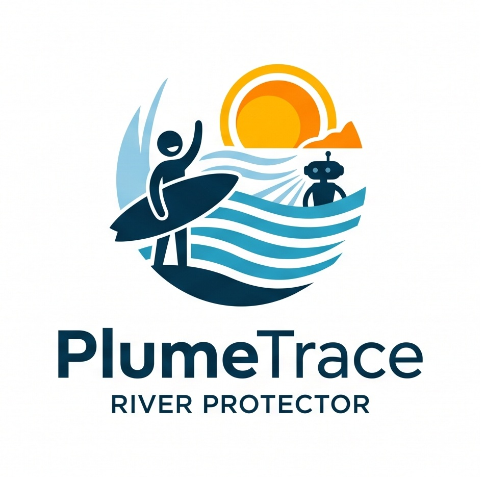

Request an inspection
Requests
- No requests yet.
Ammonia in the water
- Within limit
- Above limit
- 3× limit or more
- 8× limit or more
- Robot
- Outfall
- Highest reading
0:00 / 0:00

River authority dashboard, Pegnitz at Wöhrder Wiese, Nürnberg
Ammonia in the water